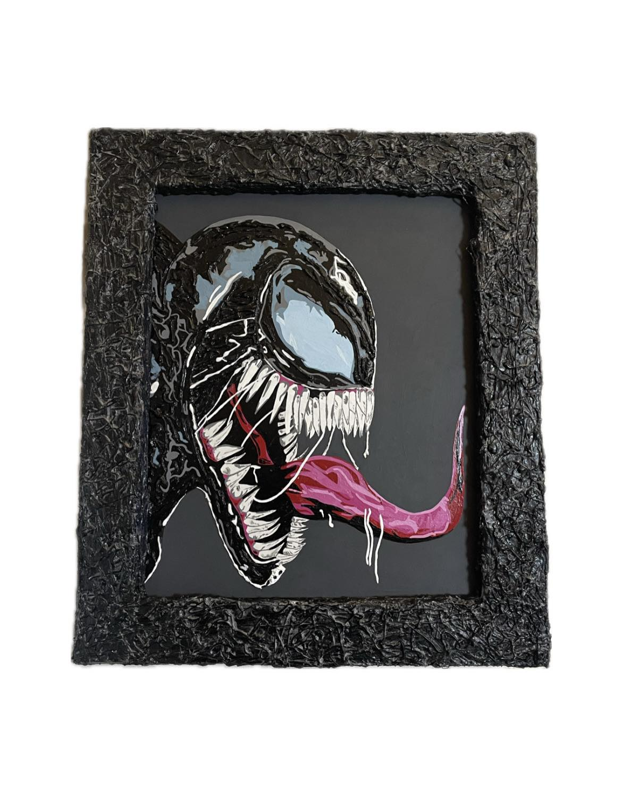

Jorge Gil
Artist / Desinger
Hola! Soy un artista y diseñador integral de la Ciudad de México, con una pasión profunda por el diseño, el arte y la historia. Para mi, un buen diseño puede cambiar hasta nuestra forma de ver la vida. Ttrabajo por crear un futuro en el que el diseño mexicano brille por su tradición, calidad, función y belleza. También he trabajado como modelo/gio intermitentemente por alrededor de 5 años y actualmente soy artista independiente con mi marca “Whoisgiil”.
Trabajemos juntos!